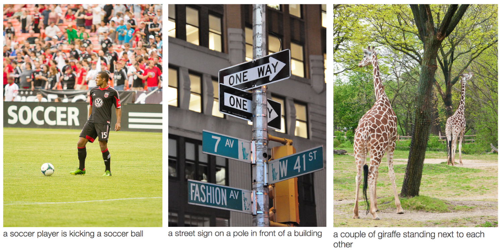
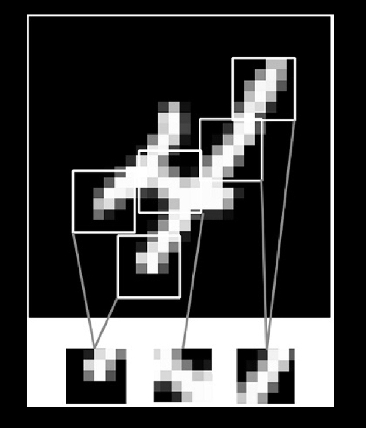
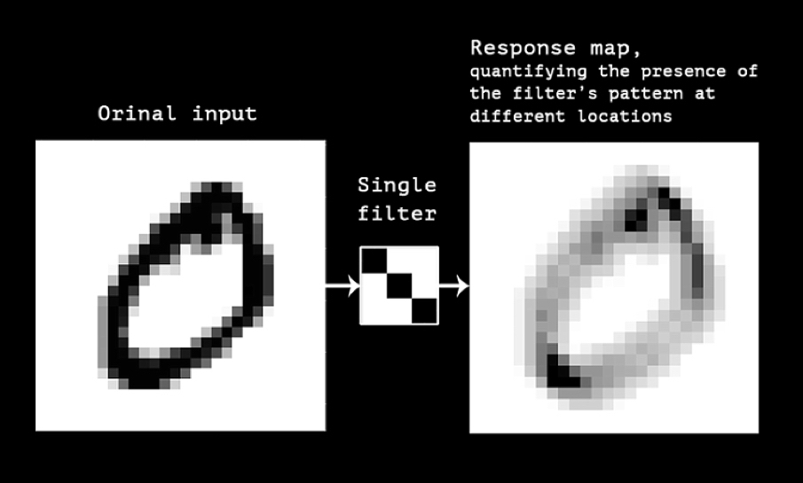
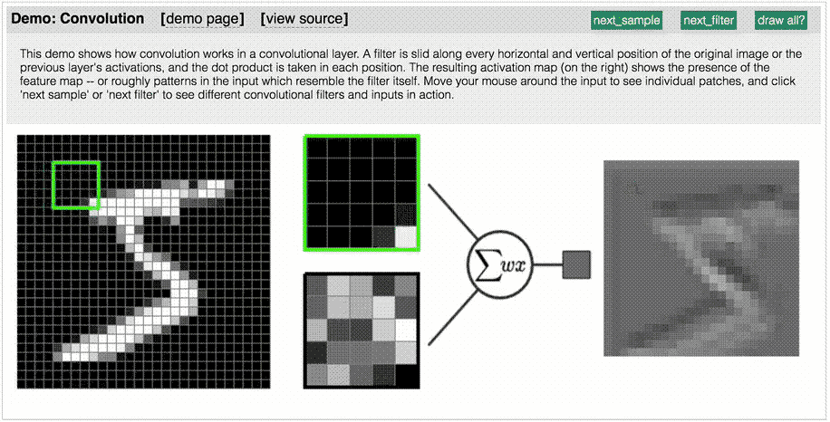
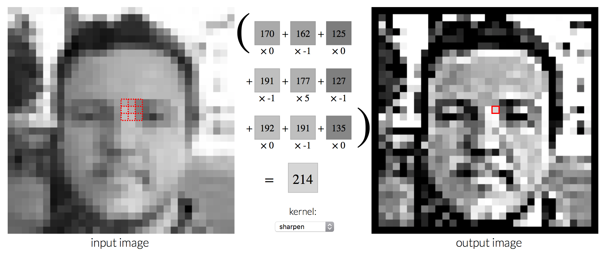
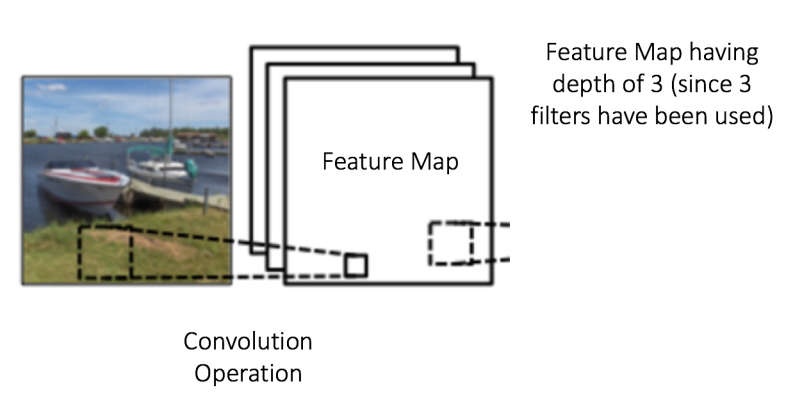
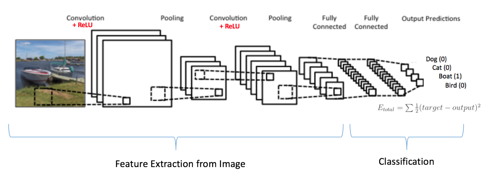

Status Quo?
1. Convolutional Neural Networks
1.1 Concept
Examples
Examples

The LeNet Architecture (1990s)

Local Patterns
Abstract visual concepts

Feature map
1.2 Steps
Neural Network

Input


Brute Force Idea 1: Searching with a Sliding Window

Brute Force Idea 2: More data and a Deep Neural Net


Step 1: Break the image into overlapping image tiles

Step 2: Feed each image tile into a small neural network

Step 3: Save the results from each tile into a new array

Step 4: Downsampling

Step 4: Downsampling

Final step: Make a prediction

1.3 How Convolution Works
The LeNet Architecture (1990s)
Convolution of the 5 x 5 image and the 3 x 3 matrix

Convolution Demo 01
Convolution Demo 02
Parameters
Pooling

Summary
Visualising CNN
Understanding Neural Networks Through Visualization
Credits
- Photosunsplash.com
- Diagrams 01ML is Fun
- Diagrams 02Intuitive Explanation of CNN
- CNN GifML4A
- Diagrams 03Deep Learning With Python by François Chollet
- ChecklistHands-On Machine Learning with Scikit-Learn and TensorFlow